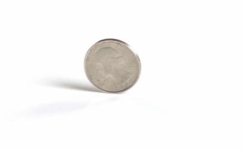
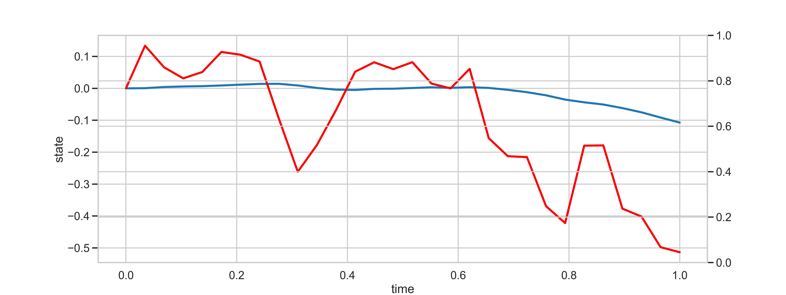
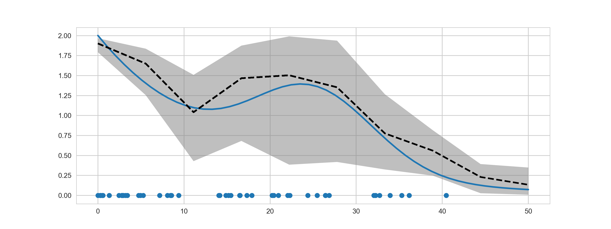

Bernoulli Race Particle Filters
Sebastian Schmon
University of Oxford
Babylon Health - March 1, 2019
Introduction
What is this talk about?
- Bernoulli factories
- Coin flips and unbiased estimators
- Bernoulli races
- Using coin flips for exact resampling in particle filters when weights are not available
analytically: Bernoulli Race Particle Filters
- Joint work with my supervisors Arnaud Doucet and George Deligiannidis, to be presented at AISTATS 2019
Introduction
- Assume you are given an unfair coin with some
unknown probability of heads, \(\mathbb{P}(C =1) = p\).
- How can this coin be used to produce a fair result, i.e. generate a coin flip with probability \(1/2\)?

Von Neumann Extractor
The following algorithm has the desired output:
- throw the coin twice and obtain \(C_1\) and \(C_2\)
- if \(C_1 = 1\) and \(C_2 = 0\) set C = 1
- if \(C_1 = 0\) and \(C_2 = 1\) set C = 0
- else return to step 1
Both outcomes have probability \(p(1-p) = (1-p)p\).
Bernoulli Factories
How (if at all) can I create a coin with probability \(f(p) \in [0,1]\) given only access to coins with probability \(p\in (0,1)\)?
Von Neumann proposed and solved \(f(p) = 1/2\). Other factories
- \(f(p) = \lambda p, \lambda\in[0,1]\): sample \(Z\sim \mathrm{Ber}(\lambda), P\sim \mathrm{Ber}(p)\) and return \(Z\cdot P\)
- \(f(p_0, p_1) = (p_0 + p_1)/2\): sample \(I \sim \mathrm{Ber}(1/2), P_0\sim \mathrm{Ber}(p_0)\) and \(P_1\sim \mathrm{Ber}(p_1)\) and output \(P_I\)
- \(f(p) = \exp(\lambda(p-1))\): sample \(K\sim \mathrm{Pois}(\lambda), P_i \sim \mathrm{Ber}(p), i=1, \ldots, K\) and output \[\prod_{i=1}^K P_i\]
Coin Flips and Unbiased Estimators
Why are we interested in coin flips?
If there is an unbiased estimator available, then we can construct a coin flip.
If \(\hat{Z}\) is an unbiased estimator of \(\mu\), then the event \(1\{U_i \leq \hat{Z}\}\) has probability \(\mu\).
We have
$$
\begin{align}
\mathbb{E}\left[1\{U_i \leq \hat{Z}\}\right] & = \int_0^1\int_0^1 1\{u \leq z\}f_\hat{Z}(z)dz du \\
& = \int_0^1 z f_\hat{Z}(z) dz = \mu.
\end{align}
$$
Hidden Markov Models
HMMs consist of a latent (unobserved) process \((X_t)_{t\in \mathbb{N}}\) with
\[X_t \mid (X_{t-1} = x) \sim f(\cdot \mid x)\]
for \(t\geq 2\) and \(X_1 \sim \mu(\cdot)\). The process can be observed through an
an observation process
\[Y_t \mid (X_t = x) \sim g(\cdot \mid x). \]
Particle Filters
Particle Filters sequentially approximate the distribution of the hidden states given the observations
$$\begin{align}
\pi_T(x_{1:T}) &= p(x_{1:T}\mid y_{1:T}) \\
&= \frac{g(y_1 \mid x_1)\mu(x_1)\prod_{t=2}^T g(y_t \mid x_t)f(x_t \mid x_{t-1})}{p(y_{1:T})}
\end{align}
$$ where $$
\begin{align}
p(y_{1:T}) = \int g(y_1 \mid x_1)\mu(x_1)\prod_{t=2}^T g(y_t \mid x_t)f(x_t \mid x_{t-1}) dx_{1:T}.
\end{align}
$$
Particle Filters
Importance Sampling
At state \(t\geq 2\) for every \(k=1, \ldots, N\)
- \(\tilde X_t^k \sim q(\cdot \mid X_{t-1}^k, y_t)\)
- \[
w_k = w(X_{t-1}^k, \tilde{X}_t^k) = \frac{g(y_t \mid \tilde{X}_t^k)f(\tilde{X}_t^k \mid X_{t-1}^k)}{q(\tilde{X}_t^k \mid X_{t-1}^k, y_t)}
\]
Particle Filters
Sequential Importance Resampling
- Sample \(I_{1:N} \sim \mathrm{Mult}(w_1, \ldots, w_N)\)
- For \(k=1,\ldots, N\) set
\[
X_{1:t}^k = \left(X_{1:(t-1)}^{I_k},\tilde{X}_{t}^{I_k}\right).
\]
What if the weights \(w_1, \ldots, w_N\) are not available analytically?
Example: Locally Optimal Proposal
The locally optimal proposal \(q^{*}\), is
\[
q^{*}(x_{t}\mid x_{t-1},y_{t})=\frac{g(y_{t}\mid x_{t})f(x_{t}\mid x_{t-1})}{p(y_{t}\mid x_{t-1})}.
\]
The weight
$$
\begin{align}
w_{t}(x_{t-1},x_{t}) & =p(y_{t}\mid x_{t-1}) \\
& =\int g(y_{t}\mid x_{t})f(x_{t}\mid x_{t-1})dx_{t}
\end{align}
$$
is usually intractable.
Bernoulli Races
- Assume we can write \(w_k = c_k b_k\), where
- \(c_k\) is known and can be computed
- \(b_k\) is an intractable quantity taking values between \(0\) and \(1\)
- we can sample \(Z \sim \mathrm{Ber}(b_k)\)
- How can we sample
\[
p(i) = \frac{c_ib_i}{\sum_k{c_kb_k}} = \frac{w_i}{\sum_k w_k}?
\]
Bernoulli Race Algorithm
-
Propose
\[
I \sim \mathsf{Mult}\left(\frac{c_1}{\sum_{k=1}^N c_k}, \ldots, \frac{c_N}{\sum_{k=1}^N c_k}\right)
\]
- Draw \(Z_I \sim \mathrm{Ber}(b_I)\)
- If \(Z_I = 1\) return \(I\)
- else go to 1.
Bernoulli Race Algorithm
Proposition.
The Bernoulli race samples from the distribution
\[
p(i) = \mathbb{P}(I=i \mid Z_I=1) = \frac{c_ib_i}{\sum_{k=1}^N c_k b_k}.
\]
Proof.
Note that the probability of sampling \(I=i\) and accepting is
$$
\begin{equation}
\mathbb{P}(I = i, Z_i = 1) = b_i \cdot \frac{c_i}{\sum_k c_k}.
\end{equation}
$$
It follows that observing \(Z_I = 1\) has probability \(\mathbb{P}(Z_I=1) = \sum_k b_k c_k / \sum_k c_k\).
Now for any \(i=1,\ldots N\)
$$
\begin{align}
p(i) & = \mathbb{P}(I = i \mid Z_I = 1) \\
& =\frac{\mathbb{P}(I = i, Z_i = 1)}{\mathbb{P}(Z_I = 1)} \\
& =\frac{b_{i}c_{i}}{\sum_{k}c_{k}}\Big/\frac{\sum_{k}b_{k}c_{k}}{\sum_{k}c_{k}} =\frac{b_{i}c_{i}}{\sum_{k}b_{k}c_{k}}.
\end{align}
$$
Connection to von Neumann's Algorithm
Remark Von Neumann's algorithm is a special case of this scheme. Set \(c_1 = p, c_2 = 1-p, b_1 = 1 - p, b_2 = p\) then
\[
p(1) = \frac{p(1-p)}{p(1-p) + (1-p)p} = \frac{1}{2}.
\]
Efficient Implementation
- Standard resampling algorithms can sample \(N\) random variables at cost \(O(N)\)
- Bernoulli race resampling can also be implemented with an average of \(O(N)\)
- In order to get fast samples we need to have an algorithm which can provide us with a constant stream of cheap proposals
- \(\Rightarrow\) The Alias method needs \(O(N)\) set up and can then sample with \(O(1)\)
- Now we need to make sure that the number of coin flips required is also linear
Efficient Implementation
The number of coin flips \(C_{j,N}\) required for each sample follows a geometric distribution with success probability
\begin{equation}
\rho_{N}= \mathbb{P}(Z_I = 1) = \frac{\sum_{k=1}^{N}c_{k}b_{k}}{\sum_{k=1}^{N}c_{k}}.\label{eq:geometric_success}
\end{equation}
The expected number of trials until a value is accepted is then
\[
\mathbb{E}\left[C_{j,N}\right]=\frac{1}{\rho_N}\quad\left(j=1,\ldots,N\right).
\]
Efficient Implementation
Proposition. Assume \(\lim_{N\rightarrow\infty}\rho_{N}=:\rho\in(0,1)\).
Then we have the following central limit theorem for the average number
of coin flips as \(N\rightarrow\infty\)
\[
\sqrt{N}\left(\frac{1}{N}\sum_{j=1}^{N}C_{j,N}-\frac{1}{\rho_{N}}\right)\overset{d}{\rightarrow}\mathcal{N}\left(0,\frac{1-\rho}{\rho^{2}}\right),
\]
where \(\overset{d}{\rightarrow}\) denotes convergence in distribution.
Bernoulli Race Particle Filters
How do Bernoulli races help us in the particle filter context?
- The Bernoulli race can be used as an implementation of the resampling step.
- Advantage: works even if the weights are intractable!
- Just need to be able to generate a coin flip proportional to the weights.
Gaussian State Space Model
The latent states evolve according to
\[
X_t=aX_{t-1}+V_{t}
\]
where we take \(a = 0.8\) and we observe these hidden variables through the observation equation
\[
Y_{t}=X_{t}+W_{t}
\]
with initialization \(X_{1}\sim\mathcal{N}(0,5)\) and \(V_{t}\sim\mathcal{N}(0,5)\),
\(W_{t}\sim\mathcal{N}(0,5)\).
Locally Optimal Proposal
We implement the Gaussian state space model with the locally optimal proposal and weights
\begin{align}
w_{t}(x_{t-1},x_{t}) & =p(y_{t}\mid x_{t-1}) \\
& =\int g(y_{t}\mid x_{t})f(x_{t}\mid x_{t-1})dx_{t} \\
& =\int \frac{1}{\sqrt{10\pi}}\exp\left(-\frac{(y_t - x_t)^2}{10}\right)\frac{1}{\sqrt{10\pi}}\exp\left(-\frac{(x_t - x_{t-1})^2}{10}\right) dx_t
\end{align}
Gaussian State Space Model
Coin flips for the weights for the locally optimal proposal can be obtained by sampling from the model \(\xi_t \sim f(\cdot \mid x_{t-1})\) and computing
\[
Z_t = 1 \left\{U \leq \exp\left(-\frac{(y_t - \xi_t)^2}{10} \right)\right\}, \quad U\sim \mathrm{Unif}[0, 1].
\]
This leads to the choice \(c_{t, 1} = \ldots = c_{t, N} = 1/\sqrt{10\pi}\) and
\[
b_{t,k} = \int \exp\left(-\frac{(y_t - x)^2}{10} \right) f(x \mid x_{t-1}) dx_{t-1}.
\]
Gaussian State Space Model
Simulation Study
- In this toy example we compare the performance of the Bernoulli Race Particle Filter
with a competitor, the random weight particle filter (RWPF).
- The RWPF is like an ordinary PF but the weights are replaced with unbiased estimates.
- Theoretically this is valid, but leads to performance deterioration.
Gaussian State Space Model
Simulation results
| Test function |
\(\sigma_{RWPF}\) |
\(\sigma_{BRPF}\) |
\(\sigma_{BRPF}/\sigma_{RWPF}\) |
| \(h_1\) |
0.17 |
0.12 |
0.74 |
| \(h_2\) |
0.93 |
0.78 |
0.84 |
| \(h_3\) |
0.19 |
0.19 |
0.96 |
| \(h_4\) |
0.42 |
0.40 |
0.94 |
Cox Process Inference
A random intensity function is a locally integrable function \(\lambda(t)\).
A process \(X_t\) is a Cox process if, conditionally upon \(\lambda\) it is a Poisson process and the (conditional) likelihood is
\[
p(y_{1:T} \mid \lambda) = \exp\left(-\int_\mathcal{T} \lambda (y) dy\right) \prod_{t=1}^T \lambda(y_t).
\]
The quantity \(\exp\left(-\int_\mathcal{T} \lambda (y) dy\right)\) is usually intractable.
Cox Process Inference
In order to perform sequential inference we use a squashed Gauss-Markov process
$$
\begin{align*}
\begin{pmatrix}
dx_{1, t} \\
dx_{2, t} \\
\end{pmatrix}
=
\begin{bmatrix}
0 & 1 \\
0 & \theta \\
\end{bmatrix}
\begin{pmatrix}
x_{1, t} \\
x_{2, t} \\
\end{pmatrix}
dt +
\begin{pmatrix}
0 \\ \sigma
\end{pmatrix}
dW_t.
\end{align*}
$$
with intensity function
\[
\lambda(t) = \sigma(x_{1, t}) = \frac{\exp(x_{1, t})}{1 + \exp(x_{1,t})}.
\]
Ornstein-Uhlenbeck Process

Cox Process Inference
Sequential inference. Propose from the prior and the weight is
\[
g(y_{i\colon y_i \in [t_0, t_1]} \mid x_{1, t}^k) = \exp\left(-\int_{t_0}^{t_1} \lambda^k(y) dy \right) \prod_{i\colon y_i \in [t_0, t_1]} \lambda^k(y_i).
\]
We can set
$$
\begin{align}
c_{t_1}^k &= \prod_{i\colon y_i \in [t_0, t_1]} \lambda^k(y_i), \\
b_{t_1}^k &= \exp\left(-\int_{t_0}^{t_1} \lambda^k(y) dy\right).
\end{align}
$$
How to generate coin flips
Note
that for a function \(g\) and \(U\sim\mathrm{Unif}[0,t]\) we have
\[
\mathbb{E}\left[\frac{g(X_{U})}{\lambda}\mid X_{s},0\leq s\leq t\right]=\int_{0}^{t}\frac{g(X_{s})}{\lambda t}ds.
\]
Using this relationship we can use debiasing schemes such as the Poisson
estimator to find a non-negative unbiased estimator of the expectation of the
exponential.
How to generate coin flips
Now sample \(K\sim \mathrm{Pois}(t_1-t_0)\), then an unbiased coin flip can be generated using
\[
Z = \prod_{i=1}^{K}1\left\{ V_{i}\leq 1 - \lambda(U_i)\right\}.
\]
Unbiasedness I
This estimator is indeed unbiased as can be seen by
\begin{align*}
& \mathbb{E}\left[Z\mid X=x\right] = \mathbb{E}\left[\prod_{i=1}^{K}1\left\{ V_{i}\leq 1 - \lambda(U_i)\right\} \mid X=x\right] \\
& =e^{-(t_1-t_0)}\sum_{k=0}^{\infty}\frac{\left(t_1-t_0\right)^{k}}{k!}\prod_{i=1}^{k}\mathbb{E}\left[1\left\{ V_{i}\leq 1-\lambda(U_i)\right\} \mid K=k,X=x\right]\\
& =e^{-(t_1-t_0)}\sum_{k=0}^{\infty}\frac{\left(t_1-t_0\right)^{k}}{k!}\left(\int_{t_0}^{t_1}\frac{1-\lambda(s)}{t_1-t_0}ds\right)^{k}\\
\end{align*}
Unbiasedness II
\begin{align}
& = e^{-(t_1-t_0)}\sum_{k=0}^{\infty}\frac{\left(t_1-t_0\right)^{k}}{k!}\left(\int_{t_0}^{t_1}\frac{1-\lambda(s)}{t_1-t_0}ds\right)^{k} \\
& = e^{-(t_1-t_0)}\sum_{k=0}^{\infty}\frac{\left(\int_{t_0}^{t_1}1-\lambda(s)ds\right)^{k}}{k!}\\
& = e^{-(t_1-t_0)}e^{t_1-t_0}\exp\left(-\int_{t_0}^{t_1}\lambda(s)ds\right)\\
& = \exp\left(-\int_{t_0}^{t_1}\lambda(s)ds\right).
\end{align}
Cox Process Inference

Notes
- The algorithm has complexity \(O(N)\) where \(N\) is the number of particles used.
- However, the constant can be very big if the Bernoulli coin flips are very inefficient.
- If a large number of coin flips is required, a GPU implementation could be very useful.
Likelihood Estimation
The standard way of estimating the marginal likelihood \(p(y_{1:T})\) is
\[
\hat{p}(y_{1:T}) = \prod_{t=1}^T \frac{1}{N} \sum_k w_{t, k}.
\]
Note that the probability for the Bernoulli race to stop at a given iteration,
i.e. to accept a value, is
\[
\mathbb{P}\left(C_{j,N} = 1\right) = \frac{\sum_{k=1}^{N}c_{t, k}b_{t, k}}{\sum_{k=1}^{N}c_{t, k}}=\frac{\frac{1}{N}\sum_{k=1}^{N}w_{t, k}}{\frac{1}{N}\sum_{k=1}^{N}c_{t, k}}.
\]
Likelihood Estimation
Thus, conditional on the weights \(w_{t,k}, k=1,\ldots,N\),
an unbiased estimator of the marginal likelihood is
\[
\hat{\rho}_{N,T}=\prod_{t=1}^{T}\frac{1}{N}\sum_{k=1}^{N}c_{t, k}\cdot\frac{N-1}{\sum_{k=1}^{N}C_{k,N}-1}.
\]
Theorem.
The estimator is unbiased for \(p(y_{1:T})\), i.e. \(\mathbb{E}\left[\hat{\rho}_{N,T}\right] = p(y_{1:T})\).